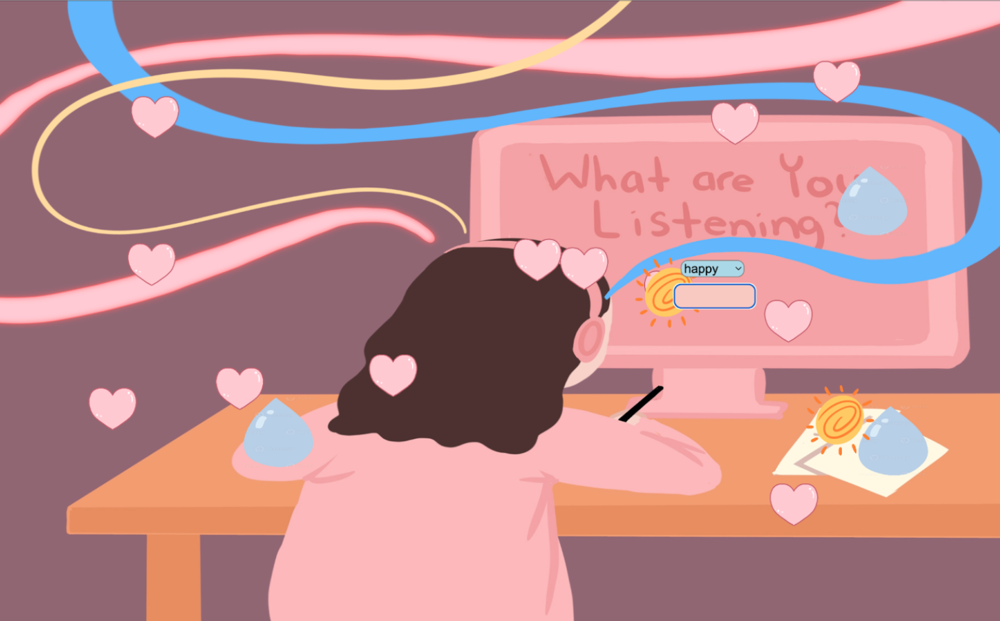
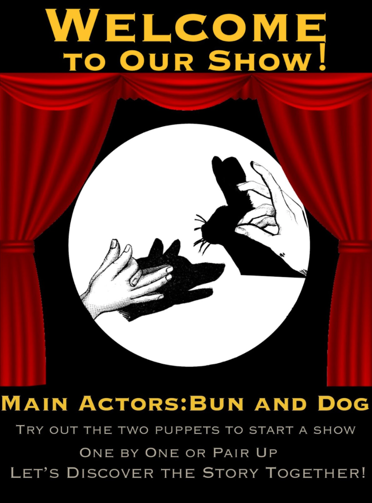
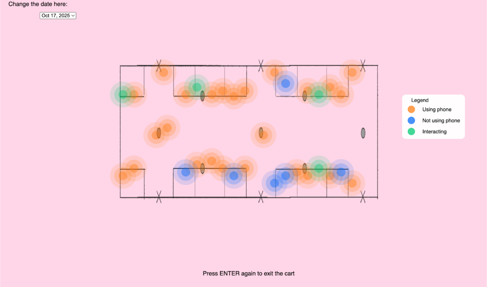

Your Life Pages
Users take control of accelerated time through work, social, and personal tasks, revealing how habits shape life.
View project →I am an interactive media artist and game designer exploring systems of participation, control, and embodied interaction.
My work spans interactive installations, digital games, and web-based experiences. I am interested in how interfaces shape behavior and how play can become a form of critical engagement.
Users take control of accelerated time through work, social, and personal tasks, revealing how habits shape life.
View project →
Transforms music listening habits into dynamic visuals using lines, colors, and symbols to reveal patterns in daily emotions.
View project →
Viewers bring hand shadow puppets to life, triggering animated scenes exploring play, memory, and imagination.
View project →
This project uses data I collected over three days to visualize how passengers in the first car of the 7 local train use their phones, interact, or stay disengaged, revealing patterns of connection and isolation in a shared public space.
View project →
A physics-driven Rube Goldberg Machine designed in Unity that creates playful, visually engaging interactions with flowers and sweets.
View project →
A filter inspired by Sichuan opera's bian lian masks and favorite childhood characters, creating an immersive, interactive experience.
View project →
A short quiz designed to help newcomers explore the world of blindboxes and get personalized suggestions.
View project →
A typography-focused newsletter exploring blindbox culture, balancing visual storytelling and text to engage readers while educating them about the origins and history of blindboxes.
View project →An elegant and dreamy monogram logo that extends into a personalized ID card, exploring how a visual identity can evolve across formats.
View project →
My Happy MUSIC visualizes how music transforms the emotional experience of working, turning stress and pressure into focus, enjoyment, and creative energy.
View project →
CAUTION addresses the lasting impact of our digital footprint. In an era where posting online often feels casual and consequence-free, this poster reflects on how harmful actions behind a screen can affect others and eventually return to the perpetrator.
View project →
A filter inspired by Sichuan opera's bian lian masks and favorite childhood characters, creating an immersive, interactive experience.
View project →